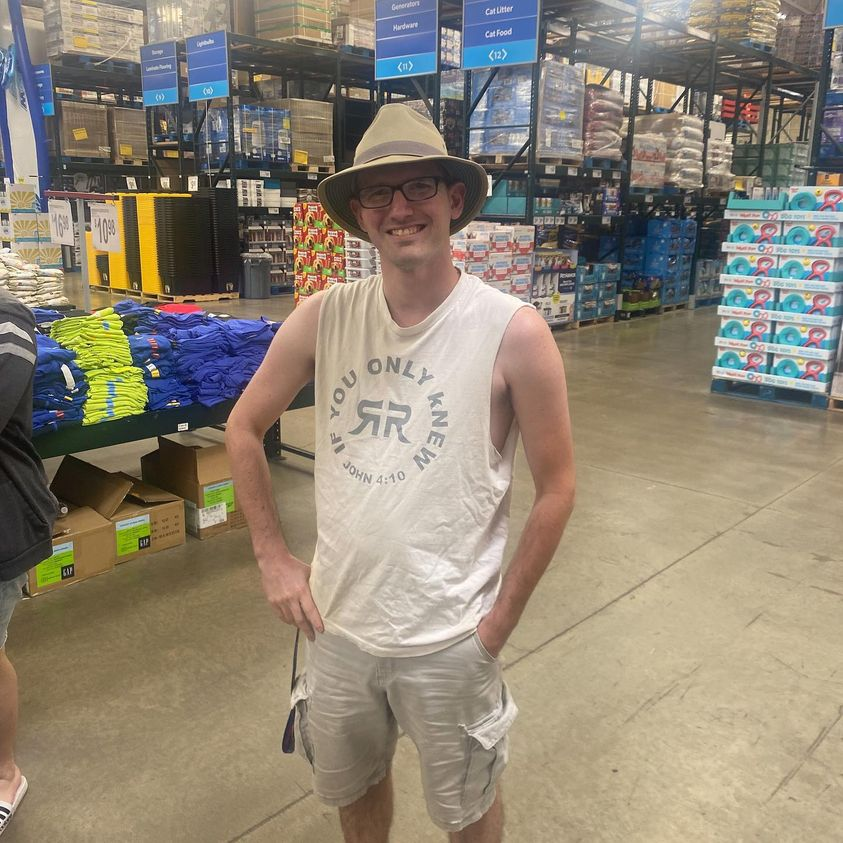

Timeline photos
This is my friend Thomas. We ran into each other at Sam’s Club.
He was with his wife of 3 years, Faith.
I asked Faith if she knew Thomas had lived in my backyard in a tent. She said she didn’t.
“I told you I was homeless for a while,” Thomas said.
That answer amused me to no end.
When you get to a point in your life where you come to me because you have nowhere else to turn, you literally have nowhere else to turn. No apartment is going to rent to you. You have no money for a motel. Your car was towed away a long time ago. You are out of options.
When you get a tent from me you also get the official homeless certification stamp on your life. You are as homeless as it gets.
And Thomas wasn’t a guy that was just with us for a couple weeks. He was a long time community member.
And now he’s so far away from that, that his wife of 3 YEARS didn’t even know it was part of his life.
That’s so so cool. You are awesome, Thomas!
I have a lot more to tell you about Thomas. He also wants to do a follow up video.
But that’s enough for today.
(“I told you I was homeless.” That’s the funniest and coolest thing I’ve heard in a long time.)
#homelesspeople
Place: Akron, Ohio (41.0732, -81.5179)
Address: Akron, OH 44301